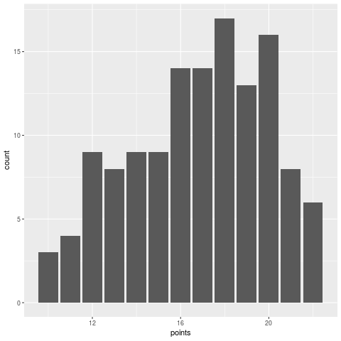
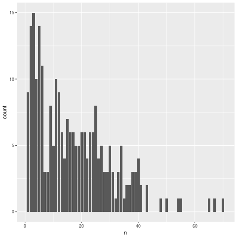
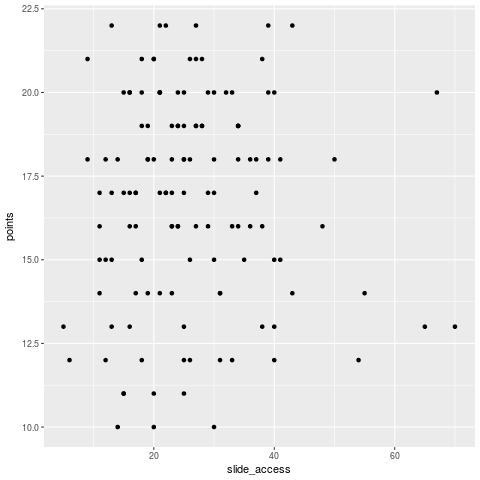
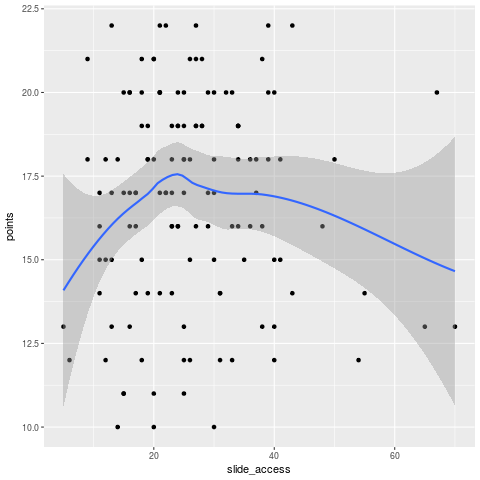
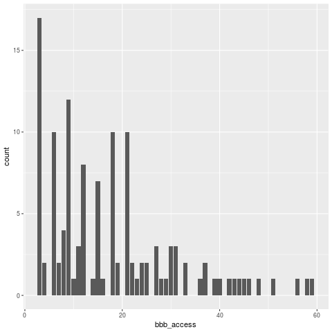
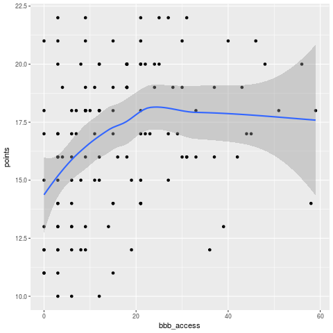
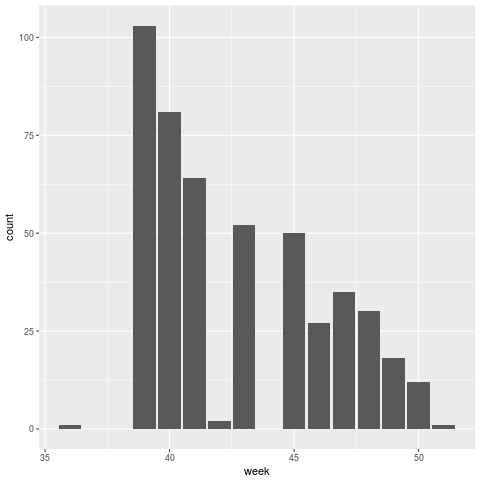
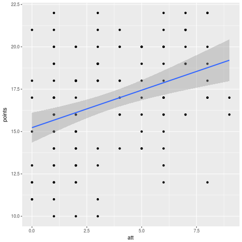
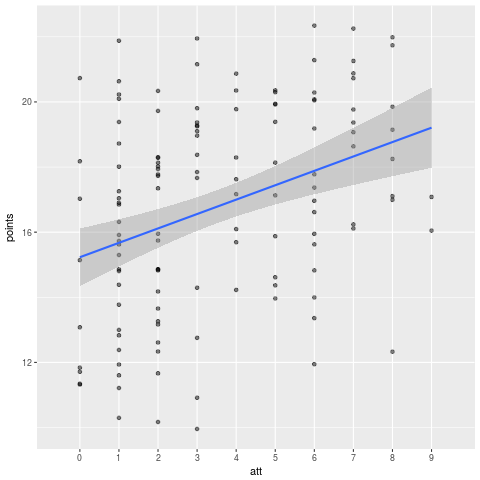

<?xml version="1.0" encoding="utf-8"?>
<!DOCTYPE html PUBLIC "-//W3C//DTD XHTML 1.0 Strict//EN"
"http://www.w3.org/TR/xhtml1/DTD/xhtml1-strict.dtd">
<html xmlns="http://www.w3.org/1999/xhtml" lang="en" xml:lang="en">
<head>
<!-- 2018-03-07 Wed 10:34 -->
<meta http-equiv="Content-Type" content="text/html;charset=utf-8" />
<meta name="viewport" content="width=device-width, initial-scale=1" />
<title>Analyzing student online activity in the Moodle logs</title>
<meta name="generator" content="Org mode" />
<meta name="author" content="Dale Barr" />
<style type="text/css">
 <!--/*--><![CDATA[/*><!--*/
  .title  { text-align: center;
             margin-bottom: .2em; }
  .subtitle { text-align: center;
              font-size: medium;
              font-weight: bold;
              margin-top:0; }
  .todo   { font-family: monospace; color: red; }
  .done   { font-family: monospace; color: green; }
  .priority { font-family: monospace; color: orange; }
  .tag    { background-color: #eee; font-family: monospace;
            padding: 2px; font-size: 80%; font-weight: normal; }
  .timestamp { color: #bebebe; }
  .timestamp-kwd { color: #5f9ea0; }
  .org-right  { margin-left: auto; margin-right: 0px;  text-align: right; }
  .org-left   { margin-left: 0px;  margin-right: auto; text-align: left; }
  .org-center { margin-left: auto; margin-right: auto; text-align: center; }
  .underline { text-decoration: underline; }
  #postamble p, #preamble p { font-size: 90%; margin: .2em; }
  p.verse { margin-left: 3%; }
  pre {
    border: 1px solid #ccc;
    box-shadow: 3px 3px 3px #eee;
    padding: 8pt;
    font-family: monospace;
    overflow: auto;
    margin: 1.2em;
  }
  pre.src {
    position: relative;
    overflow: visible;
    padding-top: 1.2em;
  }
  pre.src:before {
    display: none;
    position: absolute;
    background-color: white;
    top: -10px;
    right: 10px;
    padding: 3px;
    border: 1px solid black;
  }
  pre.src:hover:before { display: inline;}
  /* Languages per Org manual */
  pre.src-asymptote:before { content: 'Asymptote'; }
  pre.src-awk:before { content: 'Awk'; }
  pre.src-C:before { content: 'C'; }
  /* pre.src-C++ doesn't work in CSS */
  pre.src-clojure:before { content: 'Clojure'; }
  pre.src-css:before { content: 'CSS'; }
  pre.src-D:before { content: 'D'; }
  pre.src-ditaa:before { content: 'ditaa'; }
  pre.src-dot:before { content: 'Graphviz'; }
  pre.src-calc:before { content: 'Emacs Calc'; }
  pre.src-emacs-lisp:before { content: 'Emacs Lisp'; }
  pre.src-fortran:before { content: 'Fortran'; }
  pre.src-gnuplot:before { content: 'gnuplot'; }
  pre.src-haskell:before { content: 'Haskell'; }
  pre.src-hledger:before { content: 'hledger'; }
  pre.src-java:before { content: 'Java'; }
  pre.src-js:before { content: 'Javascript'; }
  pre.src-latex:before { content: 'LaTeX'; }
  pre.src-ledger:before { content: 'Ledger'; }
  pre.src-lisp:before { content: 'Lisp'; }
  pre.src-lilypond:before { content: 'Lilypond'; }
  pre.src-lua:before { content: 'Lua'; }
  pre.src-matlab:before { content: 'MATLAB'; }
  pre.src-mscgen:before { content: 'Mscgen'; }
  pre.src-ocaml:before { content: 'Objective Caml'; }
  pre.src-octave:before { content: 'Octave'; }
  pre.src-org:before { content: 'Org mode'; }
  pre.src-oz:before { content: 'OZ'; }
  pre.src-plantuml:before { content: 'Plantuml'; }
  pre.src-processing:before { content: 'Processing.js'; }
  pre.src-python:before { content: 'Python'; }
  pre.src-R:before { content: 'R'; }
  pre.src-ruby:before { content: 'Ruby'; }
  pre.src-sass:before { content: 'Sass'; }
  pre.src-scheme:before { content: 'Scheme'; }
  pre.src-screen:before { content: 'Gnu Screen'; }
  pre.src-sed:before { content: 'Sed'; }
  pre.src-sh:before { content: 'shell'; }
  pre.src-sql:before { content: 'SQL'; }
  pre.src-sqlite:before { content: 'SQLite'; }
  /* additional languages in org.el's org-babel-load-languages alist */
  pre.src-forth:before { content: 'Forth'; }
  pre.src-io:before { content: 'IO'; }
  pre.src-J:before { content: 'J'; }
  pre.src-makefile:before { content: 'Makefile'; }
  pre.src-maxima:before { content: 'Maxima'; }
  pre.src-perl:before { content: 'Perl'; }
  pre.src-picolisp:before { content: 'Pico Lisp'; }
  pre.src-scala:before { content: 'Scala'; }
  pre.src-shell:before { content: 'Shell Script'; }
  pre.src-ebnf2ps:before { content: 'ebfn2ps'; }
  /* additional language identifiers per "defun org-babel-execute"
       in ob-*.el */
  pre.src-cpp:before  { content: 'C++'; }
  pre.src-abc:before  { content: 'ABC'; }
  pre.src-coq:before  { content: 'Coq'; }
  pre.src-groovy:before  { content: 'Groovy'; }
  /* additional language identifiers from org-babel-shell-names in
     ob-shell.el: ob-shell is the only babel language using a lambda to put
     the execution function name together. */
  pre.src-bash:before  { content: 'bash'; }
  pre.src-csh:before  { content: 'csh'; }
  pre.src-ash:before  { content: 'ash'; }
  pre.src-dash:before  { content: 'dash'; }
  pre.src-ksh:before  { content: 'ksh'; }
  pre.src-mksh:before  { content: 'mksh'; }
  pre.src-posh:before  { content: 'posh'; }
  /* Additional Emacs modes also supported by the LaTeX listings package */
  pre.src-ada:before { content: 'Ada'; }
  pre.src-asm:before { content: 'Assembler'; }
  pre.src-caml:before { content: 'Caml'; }
  pre.src-delphi:before { content: 'Delphi'; }
  pre.src-html:before { content: 'HTML'; }
  pre.src-idl:before { content: 'IDL'; }
  pre.src-mercury:before { content: 'Mercury'; }
  pre.src-metapost:before { content: 'MetaPost'; }
  pre.src-modula-2:before { content: 'Modula-2'; }
  pre.src-pascal:before { content: 'Pascal'; }
  pre.src-ps:before { content: 'PostScript'; }
  pre.src-prolog:before { content: 'Prolog'; }
  pre.src-simula:before { content: 'Simula'; }
  pre.src-tcl:before { content: 'tcl'; }
  pre.src-tex:before { content: 'TeX'; }
  pre.src-plain-tex:before { content: 'Plain TeX'; }
  pre.src-verilog:before { content: 'Verilog'; }
  pre.src-vhdl:before { content: 'VHDL'; }
  pre.src-xml:before { content: 'XML'; }
  pre.src-nxml:before { content: 'XML'; }
  /* add a generic configuration mode; LaTeX export needs an additional
     (add-to-list 'org-latex-listings-langs '(conf " ")) in .emacs */
  pre.src-conf:before { content: 'Configuration File'; }

  table { border-collapse:collapse; }
  caption.t-above { caption-side: top; }
  caption.t-bottom { caption-side: bottom; }
  td, th { vertical-align:top;  }
  th.org-right  { text-align: center;  }
  th.org-left   { text-align: center;   }
  th.org-center { text-align: center; }
  td.org-right  { text-align: right;  }
  td.org-left   { text-align: left;   }
  td.org-center { text-align: center; }
  dt { font-weight: bold; }
  .footpara { display: inline; }
  .footdef  { margin-bottom: 1em; }
  .figure { padding: 1em; }
  .figure p { text-align: center; }
  .inlinetask {
    padding: 10px;
    border: 2px solid gray;
    margin: 10px;
    background: #ffffcc;
  }
  #org-div-home-and-up
   { text-align: right; font-size: 70%; white-space: nowrap; }
  textarea { overflow-x: auto; }
  .linenr { font-size: smaller }
  .code-highlighted { background-color: #ffff00; }
  .org-info-js_info-navigation { border-style: none; }
  #org-info-js_console-label
    { font-size: 10px; font-weight: bold; white-space: nowrap; }
  .org-info-js_search-highlight
    { background-color: #ffff00; color: #000000; font-weight: bold; }
  .org-svg { width: 90%; }
  /*]]>*/-->
</style>
<link rel="stylesheet" type="text/css" href="../css/my_css.css" />
<script type="text/javascript">
/*
@licstart  The following is the entire license notice for the
JavaScript code in this tag.

Copyright (C) 2012-2017 Free Software Foundation, Inc.

The JavaScript code in this tag is free software: you can
redistribute it and/or modify it under the terms of the GNU
General Public License (GNU GPL) as published by the Free Software
Foundation, either version 3 of the License, or (at your option)
any later version.  The code is distributed WITHOUT ANY WARRANTY;
without even the implied warranty of MERCHANTABILITY or FITNESS
FOR A PARTICULAR PURPOSE.  See the GNU GPL for more details.

As additional permission under GNU GPL version 3 section 7, you
may distribute non-source (e.g., minimized or compacted) forms of
that code without the copy of the GNU GPL normally required by
section 4, provided you include this license notice and a URL
through which recipients can access the Corresponding Source.


@licend  The above is the entire license notice
for the JavaScript code in this tag.
*/
<!--/*--><![CDATA[/*><!--*/
 function CodeHighlightOn(elem, id)
 {
   var target = document.getElementById(id);
   if(null != target) {
     elem.cacheClassElem = elem.className;
     elem.cacheClassTarget = target.className;
     target.className = "code-highlighted";
     elem.className   = "code-highlighted";
   }
 }
 function CodeHighlightOff(elem, id)
 {
   var target = document.getElementById(id);
   if(elem.cacheClassElem)
     elem.className = elem.cacheClassElem;
   if(elem.cacheClassTarget)
     target.className = elem.cacheClassTarget;
 }
/*]]>*///-->
</script>
</head>
<body>
<div id="org-div-home-and-up">
 <a accesskey="h" href="../index.html"> UP </a>
 |
 <a accesskey="H" href="../index.html"> HOME </a>
</div><div id="content">
<h1 class="title">Analyzing student online activity in the Moodle logs</h1>
<div id="table-of-contents">
<h2>Table of Contents</h2>
<div id="text-table-of-contents">
<ul>
<li><a href="#org306eada">Let&rsquo;s review!</a>
<ul>
<li><a href="#org9ce1106">One-table operations</a></li>
<li><a href="#org6ea7b10">Reshaping data</a></li>
<li><a href="#orgb760e3c">Two-table operations</a></li>
<li><a href="#orgfc40994">Stringing together operations using pipes</a></li>
</ul>
</li>
<li><a href="#org10df1a2">Get ready</a>
<ul>
<li><a href="#org0735941">Files</a></li>
<li><a href="#orgd0b184f">A few reminders before we begin</a></li>
</ul>
</li>
<li><a href="#orgaa905ca">Loading and exploring the data</a>
<ul>
<li><a href="#org237da4e">Loading in the final scores</a></li>
<li><a href="#org5bbf1d3">Loading in user data</a></li>
<li><a href="#org2453637">Lecture slide data</a></li>
<li><a href="#orga2d1f45">Big Blue Button data</a></li>
</ul>
</li>
</ul>
</div>
</div>

<div id="outline-container-org306eada" class="outline-2">
<h2 id="org306eada">Let&rsquo;s review!</h2>
<div class="outline-text-2" id="text-org306eada">
<p>
In the last few lessons, we&rsquo;ve been focusing on basic steps in data processing using the <code>dplyr</code> and <code>tidyr</code> add-on packages.
</p>

<p>
Unless otherwise stated, all functions discussed below can be found in the <code>dplyr</code> package.
</p>

<p>
Please see <a href="https://www.rstudio.com/wp-content/uploads/2015/02/data-wrangling-cheatsheet.pdf">R Studio&rsquo;s data wrangling cheatsheet</a> for further information and examples.
</p>
</div>

<div id="outline-container-org9ce1106" class="outline-3">
<h3 id="org9ce1106">One-table operations</h3>
<div class="outline-text-3" id="text-org9ce1106">
</div>
<ul class="org-ul">
<li><a id="orgcbe3d85"></a>Column-wise operations<br />
<div class="outline-text-4" id="text-orgcbe3d85">
<table border="2" cellspacing="0" cellpadding="6" rules="groups" frame="hsides">


<colgroup>
<col  class="org-left" />

<col  class="org-left" />
</colgroup>
<tbody>
<tr>
<td class="org-left"><code>select()</code></td>
<td class="org-left">determine which columns appear in output</td>
</tr>

<tr>
<td class="org-left"><code>rename()</code></td>
<td class="org-left">change the name of column(s)</td>
</tr>

<tr>
<td class="org-left"><code>mutate()</code></td>
<td class="org-left">create a new column</td>
</tr>
</tbody>
</table>

<p></p>
</div>
</li>

<li><a id="orgbadd607"></a>Row-wise operations<br />
<div class="outline-text-4" id="text-orgbadd607">
<table border="2" cellspacing="0" cellpadding="6" rules="groups" frame="hsides">


<colgroup>
<col  class="org-left" />

<col  class="org-left" />
</colgroup>
<tbody>
<tr>
<td class="org-left"><code>filter()</code></td>
<td class="org-left">determine which rows appear in output</td>
</tr>

<tr>
<td class="org-left"><code>arrange()</code></td>
<td class="org-left">sort observations in ascending or descending (<code>desc()</code>) order</td>
</tr>

<tr>
<td class="org-left"><code>slice()</code></td>
<td class="org-left">pull out rows by observation number</td>
</tr>
</tbody>
</table>

<p></p>
</div>
</li>

<li><a id="orgd17ea90"></a>Data summaries<br />
<div class="outline-text-4" id="text-orgd17ea90">
<table border="2" cellspacing="0" cellpadding="6" rules="groups" frame="hsides">


<colgroup>
<col  class="org-left" />

<col  class="org-left" />
</colgroup>
<tbody>
<tr>
<td class="org-left"><code>count()</code></td>
<td class="org-left">count number of different values for a variable</td>
</tr>

<tr>
<td class="org-left"><code>summarise()</code></td>
<td class="org-left">create data summaries</td>
</tr>

<tr>
<td class="org-left"><code>group_by(...) %&gt;% summarize()</code></td>
<td class="org-left">data summaries by group</td>
</tr>
</tbody>
</table>

<p></p>
</div>
</li>
</ul>
</div>

<div id="outline-container-org6ea7b10" class="outline-3">
<h3 id="org6ea7b10">Reshaping data</h3>
<div class="outline-text-3" id="text-org6ea7b10">
<p>
The data reshaping functions are found in the <code>tidyr</code> add-on package.
</p>

<table border="2" cellspacing="0" cellpadding="6" rules="groups" frame="hsides">


<colgroup>
<col  class="org-left" />

<col  class="org-left" />
</colgroup>
<tbody>
<tr>
<td class="org-left"><code>tidyr::gather()</code></td>
<td class="org-left">go from wide to long</td>
</tr>

<tr>
<td class="org-left"><code>tidyr::spread()</code></td>
<td class="org-left">go from long to wide</td>
</tr>
</tbody>
</table>
</div>
</div>

<div id="outline-container-orgb760e3c" class="outline-3">
<h3 id="orgb760e3c">Two-table operations</h3>
<div class="outline-text-3" id="text-orgb760e3c">
<table border="2" cellspacing="0" cellpadding="6" rules="groups" frame="hsides">


<colgroup>
<col  class="org-left" />

<col  class="org-left" />
</colgroup>
<tbody>
<tr>
<td class="org-left"><code>inner_join(a, b, "key")</code></td>
<td class="org-left">retain rows in a and b matching on &ldquo;key&rdquo;</td>
</tr>

<tr>
<td class="org-left"><code>semi_join(a, b, "key")</code></td>
<td class="org-left">retain rows in a that match in b</td>
</tr>

<tr>
<td class="org-left"><code>anti_join(a, b, "key")</code></td>
<td class="org-left">retain rows in a that have no match in b</td>
</tr>
</tbody>
</table>
</div>
</div>

<div id="outline-container-orgfc40994" class="outline-3">
<h3 id="orgfc40994">Stringing together operations using pipes</h3>
<div class="outline-text-3" id="text-orgfc40994">
<p>
You can string together an arbitrary number of commands using the <code>%&gt;%</code> operator.  Keep in mind that the result on the left side of the pipe is passed as the first argument to the function on the right side of the pipe.
</p>

<div class="org-src-container">
<pre><code class="src src-R"><span style="color: #008b8b;">library</span>(<span style="color: #8b2252;">"dplyr"</span>)

<span style="color: #b22222;">## </span><span style="color: #b22222;">unpiped way to do something</span>
dat1 <span style="color: #008b8b;">&lt;-</span> filter(iris, Species == <span style="color: #8b2252;">"setosa"</span>)
dat2 <span style="color: #008b8b;">&lt;-</span> select(dat1, Sepal.Length, Sepal.Width)
newdat <span style="color: #008b8b;">&lt;-</span> arrange(dat2, Sepal.Length)

<span style="color: #b22222;">## </span><span style="color: #b22222;">same, but with nested function calls (UGLY)</span>
newdat <span style="color: #008b8b;">&lt;-</span> arrange(select(filter(iris, Species == <span style="color: #8b2252;">"setosa"</span>),
                         Sepal.Length, Sepal.Width), Sepal.Length)

<span style="color: #b22222;">## </span><span style="color: #b22222;">RECOMMENDED: pipe it all together</span>
newdat <span style="color: #008b8b;">&lt;-</span> iris <span style="color: #008b8b;">%&gt;%</span>
    filter(Species == <span style="color: #8b2252;">"setosa"</span>) <span style="color: #008b8b;">%&gt;%</span>
    select(Sepal.Length, Sepal.Width) <span style="color: #008b8b;">%&gt;%</span>
    arrange(Sepal.Length)
</code></pre>
</div>
</div>
</div>
</div>

<div id="outline-container-org10df1a2" class="outline-2">
<h2 id="org10df1a2">Get ready</h2>
<div class="outline-text-2" id="text-org10df1a2">
<p>
We will explore whether online participation, as reflected in the Moodle activity logs, is related to overall performance in the class.  For this lesson we will be using data from my level 3 statistics class (PSYC 4037).  In particular, we&rsquo;ll ask:
</p>

<ul class="org-ul">
<li>Are students engaging with the course materials?</li>
<li>Is viewing the lecture slides associated with higher performance?</li>
<li>Is participation in the Big Blue Button online sessions associated with higher performance?</li>
</ul>
</div>

<div id="outline-container-org0735941" class="outline-3">
<h3 id="org0735941">Files</h3>
<div class="outline-text-3" id="text-org0735941">
<p>
<a href="moodle_data.zip">Download the zip file</a> containing the data for this lesson.  Remember to set your working directory to the location of the archive.  If you&rsquo;ve forgotten how to do this, see <a href="../the_basics/index.html#orgheadline24">here</a>.  To check whether you were successful, type <code>list.files()</code> at console prompt and you should see the output below.
</p>

<pre class="example">
[1] "bbb.csv"      "full_log.csv" "marks.csv"    "slides.csv"   "users.csv"

</pre>

<p>
Files in the archive:
</p>

<table border="2" cellspacing="0" cellpadding="6" rules="groups" frame="hsides">


<colgroup>
<col  class="org-left" />

<col  class="org-left" />
</colgroup>
<tbody>
<tr>
<td class="org-left"><code>bbb.csv</code></td>
<td class="org-left">Log of participation in online practical sessions (Big Blue Button)</td>
</tr>

<tr>
<td class="org-left"><code>full_log.csv</code></td>
<td class="org-left">Log containing <b>all</b> class activities in one big file</td>
</tr>

<tr>
<td class="org-left"><code>marks.csv</code></td>
<td class="org-left">Final marks for the course (22 point scale)</td>
</tr>

<tr>
<td class="org-left"><code>slides.csv</code></td>
<td class="org-left">Log of access to lecture slides</td>
</tr>

<tr>
<td class="org-left"><code>users.csv</code></td>
<td class="org-left">Table matching student IDs to names</td>
</tr>
</tbody>
</table>
</div>
</div>

<div id="outline-container-orgd0b184f" class="outline-3">
<h3 id="orgd0b184f">A few reminders before we begin</h3>
<div class="outline-text-3" id="text-orgd0b184f">
<p>
<b>Never set your working directory in a script.</b>  This should always be done outside of your script.  Any data files you need should be in the same directory (or a subdirectory) of the directory where the script is stored.
</p>

<p>
<b>The goal of analysis is to develop a reproducible script.</b>  You should type in your code step-by-step into an <code>.R</code> file in the text editor window.  This will include all the necessary steps to get from the raw data to the final results of your analysis.
</p>

<p>
<b>The console is your sandbox.</b>  Sometimes you&rsquo;re not exactly sure what you need to do.  Drop down into the console window and play around until you get the command working just right, and then copy it into the script window.  Listing files, viewing data frames (with <code>glimpse()</code> or <code>View()</code>) is something that you do to check on your work, and generally should not be part of your script.
</p>

<p>
<b>Order matters.</b> If you get an error message along the lines of <code>object 'x' not found</code>, you may have skipped a step.  Sometimes what happens is that you&rsquo;ll type something into the script window and forget to run it in the console (Ctrl+Enter), or perhaps there was an error in the command that you missed.  Trace back in your script to where <code>x</code> was defined and re-run it.
</p>

<p>
<b>Wait for the arrow.</b> The console will display a <code>&gt;</code> symbol when it is ready for input.  If you are about to start entering a command and see a <code>+</code> instead of a <code>&gt;</code>, the console is waiting for input to finish processing the last command that was entered.  If you want to get back to the arrow, just put your cursor in the console window and press the Esc key.
</p>

<p>
<b>R is hypersensitive to case.</b>  Last time, people were having trouble with the <code>View()</code> command because they were typing <code>view()</code> instead of <code>View()</code>.  When you get an error, make sure you typed in the command with the appropriate case.  With RStudio 0.99 this is less of an issue because it includes autocomplete and tool tips to remind you what you need to type, but since we only have 0.98 installed in the labs, you need to be extra careful.
</p>

<p>
<b>Be liberal with whitespace.</b> R ignores any whitespace (spaces, tabs, etc) in your commands.  Whitespace makes your code much easier to read and edit, and also can help you avoid ambiguities that can give rise to bugs in your code.  Consider the statement <code>x&lt;-1</code>.  Is that <code>x &lt; -1</code> or <code>x &lt;- 1</code>?  By default, R will interpret it as the latter, but unless you&rsquo;ve memorized R&rsquo;s rules for parsing, you won&rsquo;t be able to tell the difference.  See <a href="http://adv-r.had.co.nz/Style.html">Hadley Wickham&rsquo;s style guide for R</a>.
</p>

<p>
<b>Load in the add-on packages you will be using at the top of your script.</b>  For this exercise, we&rsquo;ll be using <code>dplyr</code>, <code>ggplot2</code>, and <code>lubridate</code>, so let&rsquo;s start by loading them in.
</p>

<div class="org-src-container">
<pre><code class="src src-R"><span style="color: #008b8b;">library</span>(<span style="color: #8b2252;">"dplyr"</span>)
<span style="color: #008b8b;">library</span>(<span style="color: #8b2252;">"ggplot2"</span>)
<span style="color: #008b8b;">library</span>(<span style="color: #8b2252;">"lubridate"</span>)  <span style="color: #b22222;"># </span><span style="color: #b22222;">for processing dates/times </span>
</code></pre>
</div>

<p>
Note: <code>lubridate</code> is not installed on Boyd Orr machines.  You can install it temporarily using <code>install.packages("lubridate")</code>.
</p>
</div>
</div>
</div>

<div id="outline-container-orgaa905ca" class="outline-2">
<h2 id="orgaa905ca">Loading and exploring the data</h2>
<div class="outline-text-2" id="text-orgaa905ca">
<p>
The full script for this lesson can be downloaded <a href="http:script.R">here</a>.
</p>
</div>

<div id="outline-container-org237da4e" class="outline-3">
<h3 id="org237da4e">Loading in the final scores</h3>
<div class="outline-text-3" id="text-org237da4e">
<p>
Load in the final assessment scores for the students, and plot them.
</p>

<p>
Recall that this <code>stringsAsFactors</code> argument is needed to override the default behavior, which is to read <code>character</code> fields in as data type <code>factor</code>.  (The <code>read_csv()</code> function in the <code>readr</code> package is faster and has more sensible defaults and it&rsquo;s worth your time to have a look.)
</p>

<div class="org-src-container">
<pre><code class="src src-R">scores <span style="color: #008b8b;">&lt;-</span> read.csv(<span style="color: #8b2252;">"marks.csv"</span>, stringsAsFactors = <span style="color: #228b22;">FALSE</span>)
</code></pre>
</div>

<div class="org-src-container">
<pre><code class="src src-R">head(scores)
</code></pre>
</div>

<pre class="example">
     SID points
1 131260     15
2 199830     19
3 287616     19
4 382761     17
5 525500     12
6 576198     22

</pre>

<p>
Again, we see the funny business with the leading zero being dropped from the <code>SID</code> field because R is guessing that it should be an integer rather than a character string.  So let&rsquo;s override this behavior with the <code>colClasses</code> argument (note the capital &rsquo;C&rsquo; in the middle; in programming lingo this is called <a href="https://en.wikipedia.org/wiki/CamelCase">CamelCase</a>).
</p>

<div class="org-src-container">
<pre><code class="src src-R">scores <span style="color: #008b8b;">&lt;-</span> read.csv(<span style="color: #8b2252;">"marks.csv"</span>, stringsAsFactors = <span style="color: #228b22;">FALSE</span>,
                   colClasses = c(<span style="color: #8b2252;">"character"</span>, <span style="color: #8b2252;">"integer"</span>))
</code></pre>
</div>

<div class="org-src-container">
<pre><code class="src src-R">head(scores)
</code></pre>
</div>

<pre class="example">
      SID points
1 0131260     15
2 0199830     19
3 0287616     19
4 0382761     17
5 0525500     12
6 0576198     22

</pre>

<p>
OK let&rsquo;s get a quick overview of the score distribution with a call to ggplot2.  This is just to check the data for problems, so we don&rsquo;t necessarily need to put this into our script.
</p>

<div class="org-src-container">
<pre><code class="src src-R">ggplot(scores, aes(points)) + geom_bar()
</code></pre>
</div>


<div class="figure">
<p>
</p>
</div>
</div>
</div>

<div id="outline-container-org5bbf1d3" class="outline-3">
<h3 id="org5bbf1d3">Loading in user data</h3>
<div class="outline-text-3" id="text-org5bbf1d3">
<p>
In the table <code>scores</code>, students are identified by student ID (<code>SID</code>).  In the moodle logs, as we will see below, they are identified by their full names (<code>User.full.name</code>).  If we want to link the data in the two tables, then we need a <i>lookup table</i> that relates IDs to names.  We have this in the <code>users.csv</code> file, which I was able to extract from the &ldquo;Grades&rdquo; section of Moodle.
</p>

<div class="org-src-container">
<pre><code class="src src-R">users <span style="color: #008b8b;">&lt;-</span> read.csv(<span style="color: #8b2252;">"users.csv"</span>, stringsAsFactors = <span style="color: #228b22;">FALSE</span>)
</code></pre>
</div>

<div class="org-src-container">
<pre><code class="src src-R">head(users)
</code></pre>
</div>

<pre class="example">
  First.name  Surname ID.number
1     Erfaab  Meleian   8209037
2    Riaeiaa   Galaoh      5488
3    Mvegamg     Aeai   5256885
4      Konns Jonaysao   3577138
5       Riio     Menn   8160518
6        Kci   Dmrina    935486

</pre>

<p>
Again, the issue with student ID being read in as an integer and dropping leading zeroes.  Let&rsquo;s fix this by setting all columns to character with <code>colClasses</code>.  So we&rsquo;ll re-write the above line as:
</p>

<div class="org-src-container">
<pre><code class="src src-R">users <span style="color: #008b8b;">&lt;-</span> read.csv(<span style="color: #8b2252;">"users.csv"</span>, stringsAsFactors = <span style="color: #228b22;">FALSE</span>,
                  colClasses = <span style="color: #8b2252;">"character"</span>)
</code></pre>
</div>

<div class="org-src-container">
<pre><code class="src src-R">head(users)
</code></pre>
</div>

<pre class="example">
  First.name  Surname ID.number
1     Erfaab  Meleian   8209037
2    Riaeiaa   Galaoh   0005488
3    Mvegamg     Aeai   5256885
4      Konns Jonaysao   3577138
5       Riio     Menn   8160518
6        Kci   Dmrina   0935486

</pre>

<p>
Note that here it was not necessary to specify a data type for each column individually.  If we provide a single data type the function assumes that type should apply to all columns in the file.
</p>
</div>
</div>

<div id="outline-container-org2453637" class="outline-3">
<h3 id="org2453637">Lecture slide data</h3>
<div class="outline-text-3" id="text-org2453637">
<p>
Now let&rsquo;s load in information from the logs.  First, the lecture slides.
</p>

<div class="org-src-container">
<pre><code class="src src-R">slides <span style="color: #008b8b;">&lt;-</span> read.csv(<span style="color: #8b2252;">"slides.csv"</span>, stringsAsFactors = <span style="color: #228b22;">FALSE</span>)
</code></pre>
</div>

<p>
Let&rsquo;s have a look at the format of the log file.
</p>

<div class="org-src-container">
<pre><code class="src src-R">head(slides)
</code></pre>
</div>

<pre class="example">
  User.full.name            Time Affected.user         Event.context Component
1   Mvegamg Aeai 16/12/15, 23:39             - Folder: Lecture notes    Folder
2   Mvegamg Aeai  9/12/15, 12:23             - Folder: Lecture notes    Folder
3   Mvegamg Aeai 26/11/15, 10:07             - Folder: Lecture notes    Folder
4   Mvegamg Aeai 26/11/15, 09:50             - Folder: Lecture notes    Folder
5   Mvegamg Aeai 19/11/15, 10:57             - Folder: Lecture notes    Folder
6   Mvegamg Aeai 12/11/15, 09:35             - Folder: Lecture notes    Folder
            Event.name
1 Course module viewed
2 Course module viewed
3 Course module viewed
4 Course module viewed
5 Course module viewed
6 Course module viewed
                                                                     Description
1 The user with id 'xx' viewed the 'folder' activity with course module id 'xx'.
2 The user with id 'xx' viewed the 'folder' activity with course module id 'xx'.
3 The user with id 'xx' viewed the 'folder' activity with course module id 'xx'.
4 The user with id 'xx' viewed the 'folder' activity with course module id 'xx'.
5 The user with id 'xx' viewed the 'folder' activity with course module id 'xx'.
6 The user with id 'xx' viewed the 'folder' activity with course module id 'xx'.
  Origin
1    web
2    web
3    web
4    web
5    web
6    web
</pre>

<p>
Looking at it with <code>head()</code> results in an absolute mess.  <code>glimpse()</code> gives us a better way to view it (you can also try <code>View()</code>, note the capital &rsquo;V&rsquo;).
</p>

<div class="org-src-container">
<pre><code class="src src-R">glimpse(slides)
</code></pre>
</div>

<pre class="example">
Observations: 4,184
Variables: 8
$ User.full.name &lt;chr&gt; "Mvegamg Aeai", "Mvegamg Aeai", "Mvegamg Aeai", "Mve...
$ Time           &lt;chr&gt; "16/12/15, 23:39", "9/12/15, 12:23", "26/11/15, 10:0...
$ Affected.user  &lt;chr&gt; "-", "-", "-", "-", "-", "-", "-", "-", "-", "-", "-...
$ Event.context  &lt;chr&gt; "Folder: Lecture notes", "Folder: Lecture notes", "F...
$ Component      &lt;chr&gt; "Folder", "Folder", "Folder", "Folder", "Folder", "F...
$ Event.name     &lt;chr&gt; "Course module viewed", "Course module viewed", "Cou...
$ Description    &lt;chr&gt; "The user with id 'xx' viewed the 'folder' activity ...
$ Origin         &lt;chr&gt; "web", "web", "web", "web", "web", "web", "web", "we...
</pre>

<p>
OK, this is a bit more manageable.  We can investigate what each variable means by tabulating their values using <code>count()</code>.
</p>

<div class="org-src-container">
<pre><code class="src src-R">count(slides, Affected.user)
</code></pre>
</div>

<pre class="example">
# A tibble: 1 x 2
  Affected.user     n
  &lt;chr&gt;         &lt;int&gt;
1 -              4184

</pre>

<div class="org-src-container">
<pre><code class="src src-R">count(slides, Event.context)
</code></pre>
</div>

<pre class="example">
# A tibble: 1 x 2
  Event.context             n
  &lt;chr&gt;                 &lt;int&gt;
1 Folder: Lecture notes  4184

</pre>

<div class="org-src-container">
<pre><code class="src src-R">count(slides, Component)
</code></pre>
</div>

<pre class="example">
# A tibble: 1 x 2
  Component     n
  &lt;chr&gt;     &lt;int&gt;
1 Folder     4184

</pre>

<div class="org-src-container">
<pre><code class="src src-R">count(slides, Event.name)
</code></pre>
</div>

<pre class="example">
# A tibble: 1 x 2
  Event.name               n
  &lt;chr&gt;                &lt;int&gt;
1 Course module viewed  4184

</pre>

<p>
The only useful fields here are <code>User.full.name</code> and <code>Time</code>.  Let&rsquo;s calculate the number of access times for each user.
</p>

<div class="org-src-container">
<pre><code class="src src-R">slides_n <span style="color: #008b8b;">&lt;-</span> count(slides, User.full.name)
</code></pre>
</div>

<p>
Let&rsquo;s make a histogram.
</p>

<div class="org-src-container">
<pre><code class="src src-R">ggplot(slides_n, aes(n)) + geom_bar()
</code></pre>
</div>


<div class="figure">
<p>
</p>
</div>

<p>
One thing to keep in mind is that there may be students who never accessed the lecture notes, but these students will not appear in this histogram since there will be no record in the moodle logs for these students.  Also the fact that the slides were accessed by 244 different people in a class of 130 suggests that there were people not in the class who accessed the slides.  How can we address these issues?
</p>

<p>
What we can do is a kind of &ldquo;filtering join&rdquo; in which we link <code>slides_n</code> to the master record of students in the table <code>scores</code>.  However, we cannot directly link <code>slides_n</code> to <code>scores</code> because they are &rsquo;keyed&rsquo; differently: the former on <code>User.full.name</code>, and the latter on <code>SID</code>.  We will need to link them together via <code>users</code>, which has <code>SID</code> as well as user names.
</p>

<div class="org-src-container">
<pre><code class="src src-R">head(users)
</code></pre>
</div>

<pre class="example">
  First.name  Surname ID.number
1     Erfaab  Meleian   8209037
2    Riaeiaa   Galaoh   0005488
3    Mvegamg     Aeai   5256885
4      Konns Jonaysao   3577138
5       Riio     Menn   8160518
6        Kci   Dmrina   0935486

</pre>

<p>
Immediately we are faced with the problem that we have students&rsquo; first names and surnames combined within a single variable (<code>User.full.name</code>) in <code>slides_n</code>, but represented separately in <code>users</code>.  We can solve this problem by using <code>mutate()</code> to create a new field in users that combines <code>First.name</code> and <code>Surname</code>.  We will make use of the <code>paste()</code> function, which is used to concatenate chunks of text.  We will call the new field <code>User.full.name</code>, choosing the same name as the field in <code>slides_n</code> to simplify our join.
</p>

<div class="org-src-container">
<pre><code class="src src-R">users2 <span style="color: #008b8b;">&lt;-</span> mutate(users, 
                 User.full.name = paste(First.name, Surname, sep = <span style="color: #8b2252;">" "</span>))
</code></pre>
</div>

<p>
While we&rsquo;re at it, let&rsquo;s rename the field <code>ID.number</code> to <code>SID</code> so that it matches the name in <code>scores</code>.  This will make the join to <code>scores</code> easier because the keys in both tables will have the same name, <code>SID</code>.  We&rsquo;ll re-write the above line as follows.
</p>

<div class="org-src-container">
<pre><code class="src src-R">users2 <span style="color: #008b8b;">&lt;-</span> mutate(users, 
                 User.full.name = paste(First.name, Surname, sep = <span style="color: #8b2252;">" "</span>)) <span style="color: #008b8b;">%&gt;%</span>
   rename(SID = ID.number)
</code></pre>
</div>

<p>
Now let&rsquo;s reduce <code>users2</code> to the set of students in the class by joining it to <code>scores</code> on <code>SID</code>.  Again, we will just alter the line we&rsquo;ve previously written, adding another pipe.
</p>

<div class="org-src-container">
<pre><code class="src src-R">users2 <span style="color: #008b8b;">&lt;-</span> mutate(users, 
                 User.full.name = paste(First.name, Surname, sep = <span style="color: #8b2252;">" "</span>)) <span style="color: #008b8b;">%&gt;%</span>
   rename(SID = ID.number) <span style="color: #008b8b;">%&gt;%</span>
   inner_join(scores, <span style="color: #8b2252;">"SID"</span>)
</code></pre>
</div>

<p>
Let&rsquo;s double check that we have 130 observations in <code>users2</code>.
</p>

<div class="org-src-container">
<pre><code class="src src-R">glimpse(users2)
</code></pre>
</div>

<pre class="example">
Observations: 130
Variables: 5
$ First.name     &lt;chr&gt; "Mvegamg", "Seana", "Aiioaaecrae", "Kanlecv", "Mmbie...
$ Surname        &lt;chr&gt; "Aeai", "Danraonaar", "Feal", "Ahaehh", "Bhnona", "L...
$ SID            &lt;chr&gt; "5256885", "4519492", "9674727", "7331477", "0382761...
$ User.full.name &lt;chr&gt; "Mvegamg Aeai", "Seana Danraonaar", "Aiioaaecrae Fea...
$ points         &lt;int&gt; 15, 16, 22, 20, 17, 17, 16, 15, 18, 13, 17, 21, 19, ...

</pre>

<p>
Next, we want to join <code>users2</code> to <code>slides_n</code> in a way such that all rows in <code>users2</code> are included, <i>regardless</i> of whether or not they have a matching key in <code>slides_n</code>.  The reason is that it is possible that some students never accessed the lecture slides and thus will have no records in <code>slides_n</code>.  We need to do something different from an <code>inner_join()</code>, which pulls out rows with observations in <i>both</i> tables.
</p>

<p>
What we can do here is a <code>left_join()</code>.  The function <code>left_join(a, b, "key")</code>, like <code>inner_join()</code>, will match rows from <code>a</code> and <code>b</code> on <code>key</code>, but will also return rows from <code>a</code> that don&rsquo;t match any rows in <code>b</code>.  In contrast, any rows in <code>b</code> that don&rsquo;t match rows in <code>a</code> will be dropped.  For those rows in <code>a</code> that don&rsquo;t exist in <code>b</code>, the variables in <code>b</code> will be given the value <code>NA</code> (not available).
</p>

<div class="org-src-container">
<pre><code class="src src-R">left_join(users2, slides_n, <span style="color: #8b2252;">"User.full.name"</span>) <span style="color: #008b8b;">%&gt;%</span> head()
</code></pre>
</div>

<pre class="example">
   First.name    Surname     SID   User.full.name points  n
1     Mvegamg       Aeai 5256885     Mvegamg Aeai     15 18
2       Seana Danraonaar 4519492 Seana Danraonaar     16 29
3 Aiioaaecrae       Feal 9674727 Aiioaaecrae Feal     22 13
4     Kanlecv     Ahaehh 7331477   Kanlecv Ahaehh     20 21
5       Mmbie     Bhnona 0382761     Mmbie Bhnona     17 23
6     Ceioaah       Lreq 3816494     Ceioaah Lreq     17 16

</pre>

<p>
That&rsquo;s too much to look at.  Let&rsquo;s modify the last command with a <code>select()</code> and rename <code>n</code>, the number of times lecture slides were accessed, to something more informative.
</p>

<div class="org-src-container">
<pre><code class="src src-R">slide_pts <span style="color: #008b8b;">&lt;-</span> left_join(users2, slides_n, <span style="color: #8b2252;">"User.full.name"</span>) <span style="color: #008b8b;">%&gt;%</span> 
   select(User.full.name, points, slide_access = n)
</code></pre>
</div>

<div class="org-src-container">
<pre><code class="src src-R">slide_pts  <span style="color: #b22222;"># </span><span style="color: #b22222;">print it out</span>
</code></pre>
</div>

<pre class="example">
                User.full.name points slide_access
1                 Mvegamg Aeai     15           18
2             Seana Danraonaar     16           29
3             Aiioaaecrae Feal     22           13
4               Kanlecv Ahaehh     20           21
5                 Mmbie Bhnona     17           23
6                 Ceioaah Lreq     17           16
7                 Hvsa Nrmdeya     16           33
8                 Khin Encgdii     15           40
9             Snyyhlyen Zivnit     18           19
10          Anml Armaopihnaeyl     13            5
11                 Fiii Sbnnne     17           21
12                Eadllna Aoen     21           38
13         Slitrd Rointrngglea     19           34
14                 Cgresi Ceia     20           18
15               Rarhonac Kais     19           28
16            Rlularn Jnleoemo     18           25
17                 Dgrys Nnerl     21           20
18                 Pyau Murgee     17           30
19       Locntoana Jruaaaclier     21           18
20             Ptoree Louaciae     20           33
21           Kkrhln Jnaltntone     17           11
22             Acish Oeraiiyvt     19           34
23                Sihnmr Cipic     15           13
24              Lrchu Srhianen     19           25
25               Jmhan Oyrlibe     10           20
26                Faur Zismset     11           25
27              Ansalt Lntauaa     22           27
28                  Kaur Bedaa     16           34
29               Cayt Lholunla     16           27
30            Srhtoaa Dadbniha     16           24
31               Anist Fcoaeaa     22           43
32              Zeeair Fanagay     14           31
33            Raeaeiikl Vnrysh     21           20
34               Plerf Lmaamua     16           11
35        Almrgdghnb Caoinetle     19           24
36               Ltahhaie Dano     16           17
37                Hnchlk Jkemd     18           50
38            Ssnteas Jnlyrihp     14           31
39              Knute Asornhor     16           48
40               Nloy Dnhnivnr     17           22
41               Aoas Aiaahihl     12           26
42                   Dl Hkslor     16           36
43                 Ryehlno Lah     12           33
44                  Etmzam Rie     18           14
45           Parcihay Anepaats     16           23
46            Ntbeae Peiasnodn     18           36
47       Prucnn Reatsoraibneir     11           20
48        Jiacr Rscnqronvuesaa     19           19
49                  Mlag Iitaa     20           16
50               Hdmrcl Lslynh     22           39
51              Aaaryli Bibrii     14           23
52                   Siaco Caa     17           22
53          Dcndyin Sillilnoia     18            9
54            Rehila Dhlreeaar     14           19
55                 Kna Snwailn     15           11
56               Vaocg Vlnanau     18           20
57             Kkvnbi Larjeood     20           25
58           Jmae Ellteneiasna     19           27
59             Lelhaht Fniuyln     17           17
60            Rnlnbh Knasaiuvl     18           25
61               Mfnorlui Mneu     12            6
62               Lrhnnm Senyua     20           32
63                Sshln Retana     17           29
64              Dayrrr Shunndy     20           16
65         Nrvangi Meteiioaoae     17           15
66              Xairuyy Lderri     21           27
67              Luiais Hcaiaun     12           40
68             Jnnhaa Hicuhakc     20           21
69            Jitaivb Caailona     18           41
70                Laiin Kdnain     20           29
71              Lryvnan Znktah     14           21
72               Eyehnai Kiohm     18           30
73             Oihuraan Nriiia     18           26
74                  Staa Ansie     13           25
75             Auchttsnn Dcuui     18           34
76             Ziierraa Jeaaoi     14           55
77               Neaeap Tdaare     17           25
78              Pdieae Vaninia     19           27
79          Haienlral Macninhp     13           13
80             Rooave Nntoetoc     16           23
81                 Lrdi Aayarh     12           25
82                Scolipm Aiaa     18           37
83                Greye Jacljo     20           67
84               Laanigilo Mno     18           23
85         Bninj Amnustnaeenso     12           54
86               Hligcli Gahei     14           17
87                   Cidl Snor     15           26
88               Javro Klchant     15           41
89          Jcarhaenx Maiinniv     21           28
90                     Ar Csvl     11           15
91                  Jtue Amida     16           38
92                   Taoe Yaau     14           11
93             Ahoia Seduvaalu     10           14
94            Heletan Bluriuar     17           37
95              Earxlg Jlagnna     20           30
96                 Smet Kinyae     11           15
97             Mnaen Fpmssrnhe     19           18
98                  Kdlm Aanap     19           28
99              Rheit Ieielaiy     12           31
100              Higf Mrltnllc     13           40
101               Astaru Rirha     15           12
102               Pjrnac Dsinr     18           12
103           Aanefbar Remnayr     16           16
104          Ceaiaaea Dhanulao     15           35
105            Hooocie Sisiali     13           16
106         Aiebrala Chmmmnuay     17           13
107            Kngetaa Rhcaaai     19           34
108 Mipaamt Aauamanarhetnirysn     20           40
109        Roalanvhroa Zasneah     13           38
110            Mirad Anaeynrcu     10           30
111               Naeevcn Bnkg     20           21
112              Srruh Kinarnl     20           24
113             Ctnnna Ladaqna     13           65
114                Hena Aaiian     21            9
115                  Aeln Piae     20           39
116                  Dhvn Artg     13           70
117                     Lor Dc     19           24
118               Raais Fcteie     21           26
119                 Aaaaaet Su     12           12
120                 Iiaadl Hbn     17           17
121          Rtlrtnai Aaeaneaa     16           24
122              Jveaut Ciirna     22           22
123        Eanniayia Mnliahasn     19           23
124           Vanata Ikeareyct     20           15
125              Riap Sosniats     14           43
126        Drnar Diohyatldnimh     18           19
127              Medi Scnampnl     15           30
128                  Msyie Jan     12           18
129          Clsnevu Ndtalriil     18           39
130           Portn Rotraarnca     22           21
</pre>

<p>
It&rsquo;s reassuring that there were no students with a <code>NA</code> value for <code>slide_access</code>; all students checked the lecture slide folder at least once.  Let&rsquo;s examine the relationship between <code>slide_access</code> and <code>points</code> using a scatterplot.
</p>

<div class="org-src-container">
<pre><code class="src src-R">ggplot(slide_pts, aes(slide_access, points)) + geom_point()
</code></pre>
</div>


<div class="figure">
<p>
</p>
</div>

<p>
Hard to see what&rsquo;s going on here; let&rsquo;s add a &ldquo;loess&rdquo; trendline to the plot with <code>geom_smooth()</code>.
</p>

<div class="org-src-container">
<pre><code class="src src-R">ggplot(slide_pts, aes(slide_access, points)) + geom_point() + geom_smooth()
</code></pre>
</div>


<div class="figure">
<p>
</p>
</div>

<p>
Looks like lecture slide access is related to performance in the manner expected up to a point (~22 access times).
</p>
</div>
</div>

<div id="outline-container-orga2d1f45" class="outline-3">
<h3 id="orga2d1f45">Big Blue Button data</h3>
<div class="outline-text-3" id="text-orga2d1f45">
<p>
We&rsquo;ll repeat the process with the BBB data.  The procedure is nearly identical to what we just did with the lecture slide data.
</p>

<div class="org-src-container">
<pre><code class="src src-R">bbb <span style="color: #008b8b;">&lt;-</span> read.csv(<span style="color: #8b2252;">"bbb.csv"</span>, stringsAsFactors = <span style="color: #228b22;">FALSE</span>)
</code></pre>
</div>

<div class="org-src-container">
<pre><code class="src src-R">glimpse(bbb)
</code></pre>
</div>

<pre class="example">
Observations: 2,208
Variables: 9
$ X              &lt;int&gt; 1, 2, 3, 4, 5, 6, 7, 8, 9, 10, 11, 12, 13, 14, 15, 1...
$ User.full.name &lt;chr&gt; "Mvegamg Aeai", "Mvegamg Aeai", "Mvegamg Aeai", "Mve...
$ Time           &lt;chr&gt; "6/10/15, 15:59", "6/10/15, 15:59", "6/10/15, 15:59"...
$ Affected.user  &lt;chr&gt; "-", "-", "-", "-", "-", "-", "-", "-", "-", "-", "-...
$ Event.context  &lt;chr&gt; "BigBlueButtonBN: Login to BBB online practical sess...
$ Component      &lt;chr&gt; "BigBlueButtonBN", "BigBlueButtonBN", "BigBlueButton...
$ Event.name     &lt;chr&gt; "BigBlueButtonBN meeting joined", "BigBlueButtonBN m...
$ Description    &lt;chr&gt; "The user with id 'xx' has joined a bigbluebutton me...
$ Origin         &lt;chr&gt; "web", "web", "web", "web", "web", "web", "web", "we...
</pre>

<p>
Count access times by user.
</p>

<div class="org-src-container">
<pre><code class="src src-R">bbb_n <span style="color: #008b8b;">&lt;-</span> count(bbb, User.full.name) <span style="color: #008b8b;">%&gt;%</span>
   rename(bbb_access = n)
</code></pre>
</div>

<p>
Make a histogram.
</p>

<div class="org-src-container">
<pre><code class="src src-R">ggplot(bbb_n, aes(bbb_access)) + geom_bar()
</code></pre>
</div>


<div class="figure">
<p>
</p>
</div>

<p>
Now let&rsquo;s join this to the <code>users2</code>.  We&rsquo;ll use a <code>left_join()</code> in case there are students who never logged on to BBB.
</p>

<div class="org-src-container">
<pre><code class="src src-R">bbb_pts <span style="color: #008b8b;">&lt;-</span> left_join(users2, bbb_n, <span style="color: #8b2252;">"User.full.name"</span>) <span style="color: #008b8b;">%&gt;%</span> 
   select(User.full.name, points, bbb_access)  
</code></pre>
</div>

<div class="org-src-container">
<pre><code class="src src-R">bbb_pts
</code></pre>
</div>

<pre class="example">
                User.full.name points bbb_access
1                 Mvegamg Aeai     15         12
2             Seana Danraonaar     16         31
3             Aiioaaecrae Feal     22         25
4               Kanlecv Ahaehh     20          8
5                 Mmbie Bhnona     17         45
6                 Ceioaah Lreq     17         11
7                 Hvsa Nrmdeya     16         18
8                 Khin Encgdii     15         19
9             Snyyhlyen Zivnit     18          7
10          Anml Armaopihnaeyl     13          3
11                 Fiii Sbnnne     17          3
12                Eadllna Aoen     21          9
13         Slitrd Rointrngglea     19         18
14                 Cgresi Ceia     20         21
15               Rarhonac Kais     19         24
16            Rlularn Jnleoemo     18         12
17                 Dgrys Nnerl     21         46
18                 Pyau Murgee     17         23
19       Locntoana Jruaaaclier     21         21
20             Ptoree Louaciae     20         22
21           Kkrhln Jnaltntone     17         15
22             Acish Oeraiiyvt     19         37
23                Sihnmr Cipic     15          3
24              Lrchu Srhianen     19         18
25               Jmhan Oyrlibe     10          3
26                Faur Zismset     11         NA
27              Ansalt Lntauaa     22         27
28                  Kaur Bedaa     16         42
29               Cayt Lholunla     16         12
30            Srhtoaa Dadbniha     16         30
31               Anist Fcoaeaa     22         31
32              Zeeair Fanagay     14         58
33            Raeaeiikl Vnrysh     21         40
34               Plerf Lmaamua     16         37
35        Almrgdghnb Caoinetle     19         15
36               Ltahhaie Dano     16          4
37                Hnchlk Jkemd     18          9
38            Ssnteas Jnlyrihp     14         15
39              Knute Asornhor     16         33
40               Nloy Dnhnivnr     17          7
41               Aoas Aiaahihl     12         NA
42                   Dl Hkslor     16          9
43                 Ryehlno Lah     12          9
44                  Etmzam Rie     18         33
45           Parcihay Anepaats     16          3
46            Ntbeae Peiasnodn     18          9
47       Prucnn Reatsoraibneir     11         NA
48        Jiacr Rscnqronvuesaa     19         43
49                  Mlag Iitaa     20         18
50               Hdmrcl Lslynh     22          9
51              Aaaryli Bibrii     14         21
52                   Siaco Caa     17         22
53          Dcndyin Sillilnoia     18         12
54            Rehila Dhlreeaar     14          3
55                 Kna Snwailn     15         NA
56               Vaocg Vlnanau     18          9
57             Kkvnbi Larjeood     20         48
58           Jmae Ellteneiasna     19         18
59             Lelhaht Fniuyln     17         21
60            Rnlnbh Knasaiuvl     18         15
61               Mfnorlui Mneu     12          3
62               Lrhnnm Senyua     20         21
63                Sshln Retana     17         27
64              Dayrrr Shunndy     20          3
65         Nrvangi Meteiioaoae     17         29
66              Xairuyy Lderri     21         15
67              Luiais Hcaiaun     12         36
68             Jnnhaa Hicuhakc     20         24
69            Jitaivb Caailona     18         51
70                Laiin Kdnain     20         12
71              Lryvnan Znktah     14         15
72               Eyehnai Kiohm     18          6
73             Oihuraan Nriiia     18          9
74                  Staa Ansie     13          3
75             Auchttsnn Dcuui     18         NA
76             Ziierraa Jeaaoi     14         21
77               Neaeap Tdaare     17          3
78              Pdieae Vaninia     19          9
79          Haienlral Macninhp     13         NA
80             Rooave Nntoetoc     16          6
81                 Lrdi Aayarh     12          6
82                Scolipm Aiaa     18         12
83                Greye Jacljo     20         18
84               Laanigilo Mno     18         10
85         Bninj Amnustnaeenso     12         19
86               Hligcli Gahei     14          3
87                   Cidl Snor     15         11
88               Javro Klchant     15         27
89          Jcarhaenx Maiinniv     21         30
90                     Ar Csvl     11          3
91                  Jtue Amida     16         31
92                   Taoe Yaau     14          6
93             Ahoia Seduvaalu     10         12
94            Heletan Bluriuar     17         44
95              Earxlg Jlagnna     20         18
96                 Smet Kinyae     11         15
97             Mnaen Fpmssrnhe     19         11
98                  Kdlm Aanap     19         18
99              Rheit Ieielaiy     12          8
100              Higf Mrltnllc     13          9
101               Astaru Rirha     15          6
102               Pjrnac Dsinr     18          9
103           Aanefbar Remnayr     16          3
104          Ceaiaaea Dhanulao     15          8
105            Hooocie Sisiali     13          6
106         Aiebrala Chmmmnuay     17         NA
107            Kngetaa Rhcaaai     19          4
108 Mipaamt Aauamanarhetnirysn     20         18
109        Roalanvhroa Zasneah     13          6
110            Mirad Anaeynrcu     10          6
111               Naeevcn Bnkg     20         18
112              Srruh Kinarnl     20         56
113             Ctnnna Ladaqna     13         39
114                Hena Aaiian     21         NA
115                  Aeln Piae     20         12
116                  Dhvn Artg     13         14
117                     Lor Dc     19         30
118               Raais Fcteie     21          3
119                 Aaaaaet Su     12         NA
120                 Iiaadl Hbn     17          6
121          Rtlrtnai Aaeaneaa     16         16
122              Jveaut Ciirna     22          3
123        Eanniayia Mnliahasn     19         28
124           Vanata Ikeareyct     20         25
125              Riap Sosniats     14         21
126        Drnar Diohyatldnimh     18         21
127              Medi Scnampnl     15         21
128                  Msyie Jan     12          3
129          Clsnevu Ndtalriil     18         59
130           Portn Rotraarnca     22         21
</pre>

<p>
In contrast to the data for accessing lecture notes, here we indeed see that there were some students who never used the BBB resource.  Their values for <code>bbb_access</code> are <code>NA</code>.  We should replace these <code>NA</code> values with zeros, which we can do using the <code>mutate()</code> command.  Let&rsquo;s add it onto the previous command using a pipe.
</p>

<div class="org-src-container">
<pre><code class="src src-R">bbb_pts <span style="color: #008b8b;">&lt;-</span> left_join(users2, bbb_n, <span style="color: #8b2252;">"User.full.name"</span>) <span style="color: #008b8b;">%&gt;%</span> 
   select(User.full.name, points, bbb_access) <span style="color: #008b8b;">%&gt;%</span>
   mutate(bbb_access = ifelse(is.na(bbb_access), 0, bbb_access))
</code></pre>
</div>

<p>
Now plot.
</p>

<div class="org-src-container">
<pre><code class="src src-R">ggplot(bbb_pts, aes(bbb_access, points)) + geom_point() + geom_smooth()
</code></pre>
</div>


<div class="figure">
<p>
</p>
</div>

<p>
Again, we see the expected relationship up to a point (~20).  However, this way of looking at the data does not distinguish between clicking the BBB link 10 times on the same day and clicking it 10 times, once each week when the student logs into a session.  It would perhaps be better to look at BBB access times in relation to the times that sessions were actually held, to calculate some kind of &rsquo;attendance&rsquo; variable for the BBB sessions.
</p>

<p>
Dealing with dates can be tricky, but thankfully there is a package called <code>lubridate</code> (also by Hadley Wickham) which can make life much easier (unfortunately this package is not installed on the Boyd Orr computers).
</p>

<div class="org-src-container">
<pre><code class="src src-R">by_week <span style="color: #008b8b;">&lt;-</span> bbb <span style="color: #008b8b;">%&gt;%</span>
    mutate(date = dmy_hm(Time), <span style="color: #b22222;"># </span><span style="color: #b22222;">parse the text date</span>
           week = week(date)) <span style="color: #008b8b;">%&gt;%</span> <span style="color: #b22222;"># </span><span style="color: #b22222;">calculate week of year (1-52)</span>
    select(User.full.name, date, week)
</code></pre>
</div>

<p>
We used two functions from <code>lubridate</code>, <code>dmy_hm</code> and <code>week</code>.  The first one, <code>dmy_hm</code> gives lubridate a clue about how to parse the text; namely, that the text date is in the format &ldquo;Day Month Year Hour Minute&rdquo; (hence dmy_hm).  The function converts the text date into a date variable that can be used for various date operations.  The next function, <code>week()</code> figures out which week of the year (1&#x2013;52) the date corresponds to.  Note that we are applying <code>week()</code> on the <code>date</code> variable that we just created in <code>mutate()</code>.
</p>

<div class="org-src-container">
<pre><code class="src src-R">head(by_week)
</code></pre>
</div>

<pre class="example">
  User.full.name                date week
1   Mvegamg Aeai 2015-10-06 15:59:00   40
2   Mvegamg Aeai 2015-10-06 15:59:00   40
3   Mvegamg Aeai 2015-10-06 15:59:00   40
4   Mvegamg Aeai 2015-10-06 15:39:00   40
5   Mvegamg Aeai 2015-10-06 15:39:00   40
6   Mvegamg Aeai 2015-10-06 15:39:00   40

</pre>

<p>
Since the BBB sessions were weekly, we only want to keep one session for each week; in other words, we want to ignore multiple logons within the same week.  We can do this using the <code>distinct()</code> function in <code>dplyr</code>.
</p>

<div class="org-src-container">
<pre><code class="src src-R">by_week_d <span style="color: #008b8b;">&lt;-</span> by_week <span style="color: #008b8b;">%&gt;%</span>
    select(User.full.name, week) <span style="color: #008b8b;">%&gt;%</span>
    distinct()
</code></pre>
</div>

<p>
The function <code>distinct()</code> returns only rows having distinct values on <code>User.full.name</code> and <code>week</code>.  We can regard this as a record of student attendance, and we will only have on observation for each student on each week.  Let&rsquo;s visualize attendance week by week.
</p>

<div class="org-src-container">
<pre><code class="src src-R">ggplot(by_week_d, aes(week)) + geom_bar()
</code></pre>
</div>


<div class="figure">
<p>
</p>
</div>

<p>
Clearly, attendance is declining over the course of the semester.  A total of 9 BBB sessions were held on weeks 39, 40, 41, 43, 45, 46, 47, 48, 49.  Clearly, students have clicked on the link outwith these weeks.  Let&rsquo;s get rid of those extra clicks using <code>filter()</code>
</p>

<div class="org-src-container">
<pre><code class="src src-R">by_week_d <span style="color: #008b8b;">&lt;-</span> by_week <span style="color: #008b8b;">%&gt;%</span>
    select(User.full.name, week) <span style="color: #008b8b;">%&gt;%</span>
    distinct() <span style="color: #008b8b;">%&gt;%</span>
    filter(week <span style="color: #008b8b;">%in%</span> c(39, 40, 41, 43, 45:49))
</code></pre>
</div>

<p>
OK, what we still haven&rsquo;t done is reduce the set in <code>by_week_d</code> to include only those users who are also students in the class.  We can do this using a <code>semi_join()</code>.  This will include only those observations in <code>by_week_d</code> that have a matching record in <code>users2</code>.
</p>

<div class="org-src-container">
<pre><code class="src src-R">by_week_d2 <span style="color: #008b8b;">&lt;-</span> by_week_d <span style="color: #008b8b;">%&gt;%</span>
  semi_join(users2, <span style="color: #8b2252;">"User.full.name"</span>)
</code></pre>
</div>

<p>
This ends up dropping three observations from <code>by_week_d</code>.
</p>

<p>
OK, we&rsquo;re about ready to compute attendance.  We can simply count up the number of observations for each student.
</p>

<div class="org-src-container">
<pre><code class="src src-R">bbb_attend <span style="color: #008b8b;">&lt;-</span> count(by_week_d2, User.full.name) <span style="color: #008b8b;">%&gt;%</span>
   rename(att = n)
</code></pre>
</div>

<p>
Now left join <code>users2</code> to <code>bbb_attend</code>, and convert any <code>NA</code> values to 0.
</p>

<div class="org-src-container">
<pre><code class="src src-R">bbb_att_pts <span style="color: #008b8b;">&lt;-</span> left_join(users2, bbb_attend, <span style="color: #8b2252;">"User.full.name"</span>) <span style="color: #008b8b;">%&gt;%</span>
    mutate(att = ifelse(is.na(att), 0, att))
</code></pre>
</div>

<p>
Let&rsquo;s make a scatterplot.
</p>

<div class="org-src-container">
<pre><code class="src src-R">ggplot(bbb_att_pts, aes(att, points)) + geom_point() +
    geom_smooth(method = <span style="color: #8b2252;">"lm"</span>)
</code></pre>
</div>


<div class="figure">
<p>
</p>
</div>

<p>
We probably have some overplotting going on, so let&rsquo;s jitter the points with <code>geom_jitter()</code>.
</p>

<div class="org-src-container">
<pre><code class="src src-R">ggplot(bbb_att_pts, aes(att, points)) + geom_jitter(alpha = .5, width = 0) +
    geom_smooth(method = <span style="color: #8b2252;">"lm"</span>) + scale_x_discrete(limits = 0:9) +
    coord_cartesian(xlim = c(-0.5, 9.5))
</code></pre>
</div>


<div class="figure">
<p>
</p>
</div>

<p>
Now the relationship is much clearer: attendance at online practical sessions is associated with higher performance.  We can estimate a regression model using <code>lm()</code>.
</p>

<div class="org-src-container">
<pre><code class="src src-R">lm(points ~ att, bbb_att_pts) <span style="color: #008b8b;">%&gt;%</span> summary()
</code></pre>
</div>

<pre class="example">

Call:
lm(formula = points ~ att, data = bbb_att_pts)

Residuals:
    Min      1Q  Median      3Q     Max 
-6.7667 -2.3013  0.3271  2.4141  6.3271 

Coefficients:
            Estimate Std. Error t value Pr(&gt;|t|)    
(Intercept)  15.2309     0.4452  34.209  &lt; 2e-16 ***
att           0.4420     0.1033   4.277 3.68e-05 ***
---
Signif. codes:  0 ‘***’ 0.001 ‘**’ 0.01 ‘*’ 0.05 ‘.’ 0.1 ‘ ’ 1

Residual standard error: 2.935 on 128 degrees of freedom
Multiple R-squared:  0.125,	Adjusted R-squared:  0.1182 
F-statistic: 18.29 on 1 and 128 DF,  p-value: 3.679e-05
</pre>

<p>
So every additional session attended was associated with a .44 increase in the course grade.
</p>
</div>
</div>
</div>
</div>
<div id="postamble" class="status">
<p class="date">Date: R Training</p>
<p class="author">Author: Dale Barr</p>
<p class="date">Created: 2018-03-07 Wed 10:34</p>
<p class="validation"><a href="http://validator.w3.org/check?uri=referer">Validate</a></p>
</div>
</body>
</html>
